CMIP6에 참여한 전구기후모델들을 대상으로 해양열함량(OHC)의 전지구·수평 분포 재현성을 평가하고, ENSO 강도 변화와 관련된 혼합층 깊이·수온약층·대기 되먹임 특성을 분석함. 이어 물리량 및 변동 경향 측면에서 CMIP6 전구모델들의 모의 수준을 상호비교하고, 이를 바탕으로 북태평양·북서태평양 지역모델의 경계값으로 활용할 CMIP6 모델을 선정하는 방법과 그 민감도를 정리함.
CMIP6 참여 전구모델 평가
해양열함량(OHC, Ocean Heat Content) 평가
수집한 CMIP6 전구모델들을 대상으로 전지구 적분한 해양열함량 변화를 평가하였음.
개별 모델들은 편차가 크며 관측과 큰 차이를 보이는 모델들도 존재(그림 1).
개별 모델들의 앙상블 평균은 관측과 유사한 모습을 보이나 여전히 해양열함량을 과소모의하고 있음.
특히 전지구 수평적분한 해양열함량 추세의 수직분포(그림 2)를 보면 상층 150 m까지는 관측에 비해 과대모의, 하층은 관측에 비해 과소모의하는 모습을 보이고 있고, 이는 전구해양기후모델들이 관측에 비해 해양의 성층을 더 강하게 모의하며 미래 예측에 있어 해양열함량이 과소모의될 수 있음을 의미.
해양열함량의 과소모의는 미래 해수면 예측에 직접적인 영향을 미칠 수 있는 요소이므로 어떤 원인으로 인해 해양열함량이 과소모의되었는지 파악하는 것이 중요함.
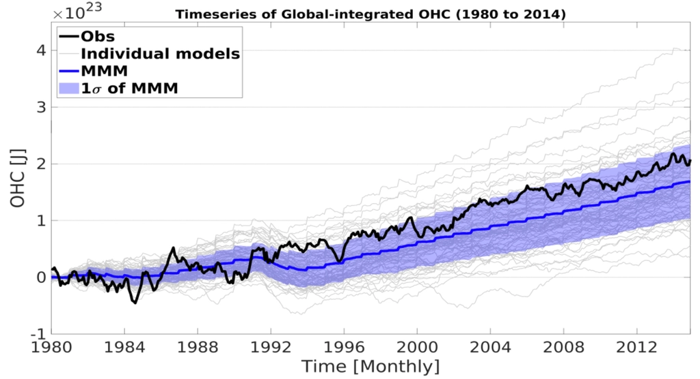
그림 11980년 기준 상층 2000m 적분 전지구 해양열함량 변동 추세
1980년 기준 상층 2000m 적분 전지구 해양열함량 변동 추세, 2023 연차보고서
'">
1980년 기준 상층 2000m 적분 전지구 해양열함량 변동 추세, 2023 연차보고서
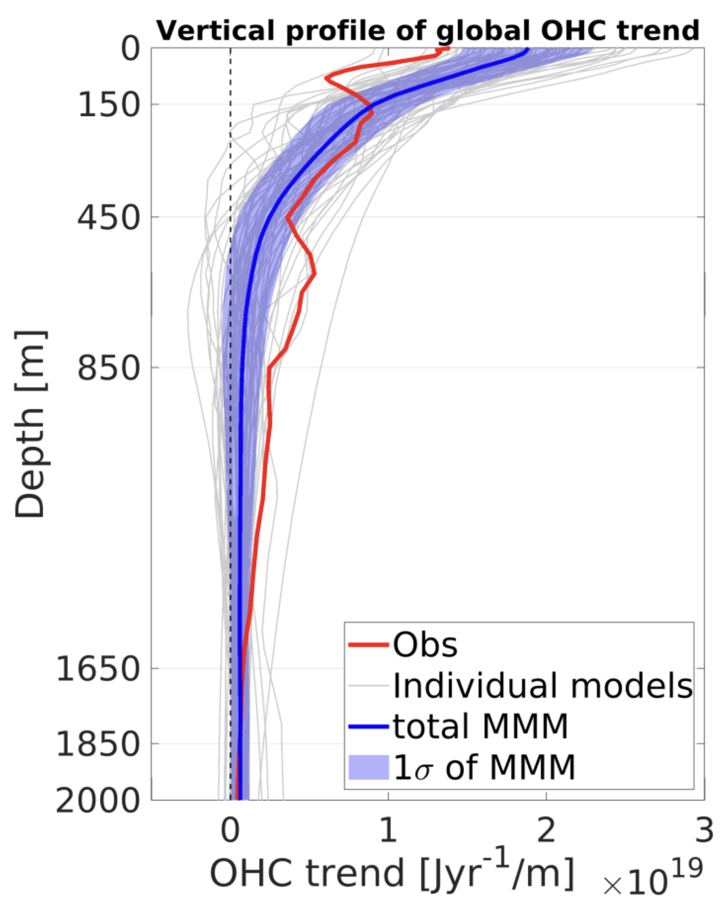
그림 21980~2014 전지구 수평적분 해양열함량 추세의 연직 분포
1980~2014 전지구 수평적분 해양열함량 추세의 연직 분포
'">
1980~2014 전지구 수평적분 해양열함량 추세의 연직 분포
해양열함량 추세의 수평 분포
CMIP6 전구모델들 해양열함량 모의에 지역적으로 어떤 차이가 있는지 알아보기 위해 해양열함량 추세의 수평분포를 조사하였음
관측과 앙상블 평균의 해양열함량 추세를 비교했을 때 태평양과 인도양 일부 적도 부분, 태평양과 대서양의 서안경계류 지역, 그리고 남위 30도 지역에서 차이를 보임
태평양과 대서양의 서안경계류 지역은 각각 쿠로시오와 Gulf stream의 영향을 받는 지역으로 서안경계류의 큰 변동성으로 인해 모델들의 모의 성능이 저하될 수 있음
남위 30도 지역에서는 거의 모든 경도에서 차이가 나타나는 것으로 보아 남극순환류의 경로와 관련이 있을 수 있음
태평양 적도 지역은 그중에서도 가장 두드러지는 차이를 보이고 있으며 통계적으로도 유의미한 차이가 있음을 보여줌
특히 태평양 적도 지역에서 관측은 La Nina-like 패턴을 보이고 있는 앙상블 평균에서는 그러한 모습이 나타나지 않음
총 4개 CMIP6 model의 historical run (1970년~2014년)과 SSP 5-8.5 (2070년~2100년) 동안 적도 태평양에서의 20℃ 등온선 분석을 수행함.
적도 태평양 20℃ 등온선 경사
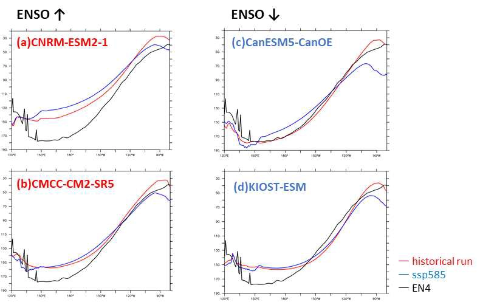
그림 10적도 태평양에서의 20℃ 등온선의 x 기울기
적도 태평양에서의 20℃ 등온선의 x 기울기
'">
적도 태평양에서의 20℃ 등온선의 x 기울기
미래 기후로 갈수록 모든 CMIP6 model에서 동태평양에서의 수온약층 깊이가 깊어짐을 확인함. (a), (b)에 비하여 (c), (d)가 상대적으로 깊은 수온약층을 가지고 있으며, 미래 기후에서 동태평양의 수온약층 깊이가 깊어지는 정도도 더 크다는 것을 알 수 있음.
수온약층 두께가 두꺼워지고 있기때문에 Bjerknes feedback이 약화되는 것으로 추측됨. 이러한 기작의 차이로 인해 ENSO 강도가 달라짐에 영향을 준다는 것을 확인함.
CMIP6 model 값보다 관측값인 EN4가 수온약층 깊이가 훨씬 깊음. 하지만 미래 기후에서 ENSO 강도가 강하게 나타나는 CMIP6 model은 일부 약하게 나타나는 model에 비하여 관측값과 가깝지 않게 나타남.
이는 CMIP6가 오히려 미래 기후를 잘못 모의하고 있을 가능성을 제시함. 그러나 CMIP6 model 중 일부만 분석하였기 때문에 더 면밀한 분석이 필요함.
대기 되먹임(Atmosphere Feedback) 분석
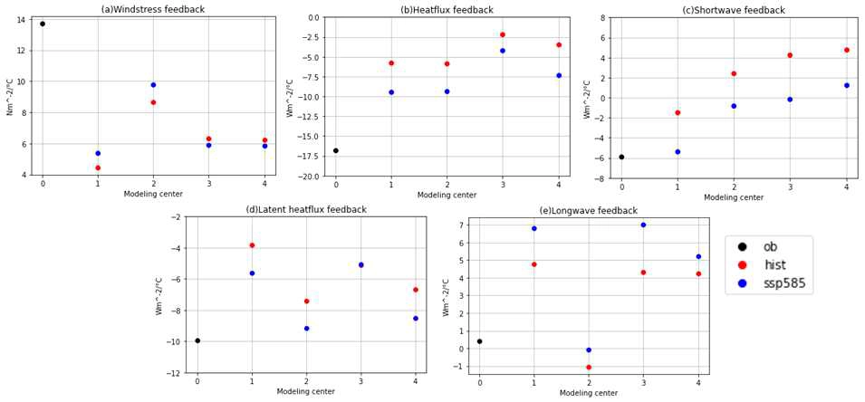
그림 11ENSO 기간 동안 Atmosphere feedbacks
CMIP 및 ScenarioMIP 그리고 ENSO metrics에 대한 ENSO 기간 동안 Atmosphere feedbacks(검은색 점 : 관측값, 붉은색 점 : historical run, 파란색 점: SSP5-8.5)
'">
CMIP 및 ScenarioMIP 그리고 ENSO metrics에 대한 ENSO 기간 동안 Atmosphere feedbacks(검은색 점 : 관측값, 붉은색 점 : historical run, 파란색 점: SSP5-8.5)
ENSO에 영향을 미치는 것으로 알려진 feedback들을 분석해본 결과, 전체 heat flux feedback이 미래기후로 갈수록 더 큰 음의 값을 가지는 것을 알 수 있음.
이에 영향이 크다고 알려진 shortwave feedback 역시 같은 방향성을 가짐.
ENSO 강도가 증가하는 model group에서는 windstress feedback이 historical run에 비해 SSP5-8.5에서 증가하고 있었으며, ENSO 강도가 감소하는 model group에서는 반대의 양상이 나타남.
Bjerknes feedback 강도 시계열
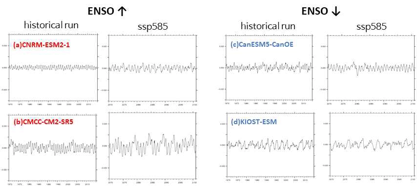
그림 12Bjerknes feedback 강도에 대한 시계열 분석
Bjerknes feedback 강도에 대한 시계열 분석(i.e., All the wind response to the zonal SST gradient)
'">
Bjerknes feedback 강도에 대한 시계열 분석(i.e., All the wind response to the zonal SST gradient)
Bjerknes feedback을 확인하였을 때, ENSO 강도 세기에 따른 두 model group에서 큰 차이를 보임. 미래기후에서 ENSO 강도가 증가하는 group에서는 historical run에 비해 SSP5-8.5에서 Bjerknes feedback이 증가했으며, ENSO 강도가 증가하는 group에서는 과거와 미래 기후 비교시 큰 차이를 보이지 않음.
그러나 CMIP6 model 내에서 Bjerknes feedback의 변동성이 크기 때문에 ENSO 예측에 불확실성이 생기는 것으로 파악됨.
SLPA–Nino3.4 회귀 분석
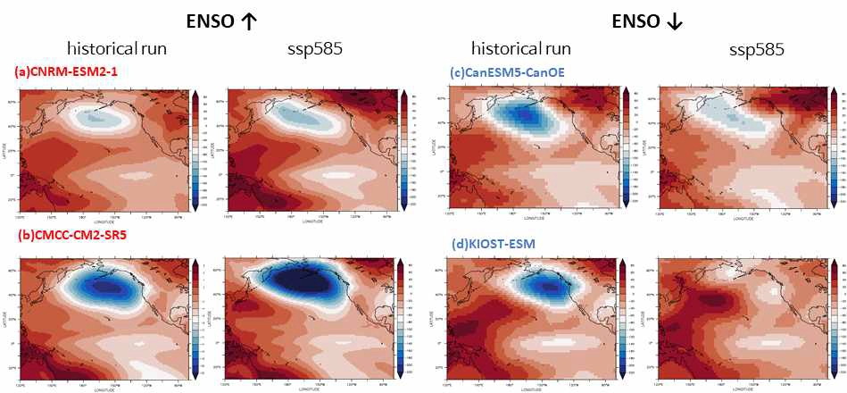
그림 13SLPA-Nino3.4 index regression map
Sea level pressure anomaly(SLPA)-Nino3.4 index regression map
'">
Sea level pressure anomaly(SLPA)-Nino3.4 index regression map
미래 기후에서 ENSO 강도가 커지는 (a), (b)에서는 Aleutian Low (AL) mode가 강화되고 있는 반면, 미래 기후에서 ENSO 강도가 약해지는 (c), (d)에서는 Aleutian Low(AL) mode가 약화됨
ENSO 강도는 북태평양 SLPA의 10년 주기 기후 변화에 기인할 수 있음. ENSO 강도에 따라 구분한 model group에서는 AL mode 강도가 미래 기후에 따라 변화는 것을 확인함.
이는 북태평양의 기후 변동성에 영향을 미치는 역동적 과정에 대한 실마리를 제공함
Nino3.4 지수 파워 스펙트럼 분석
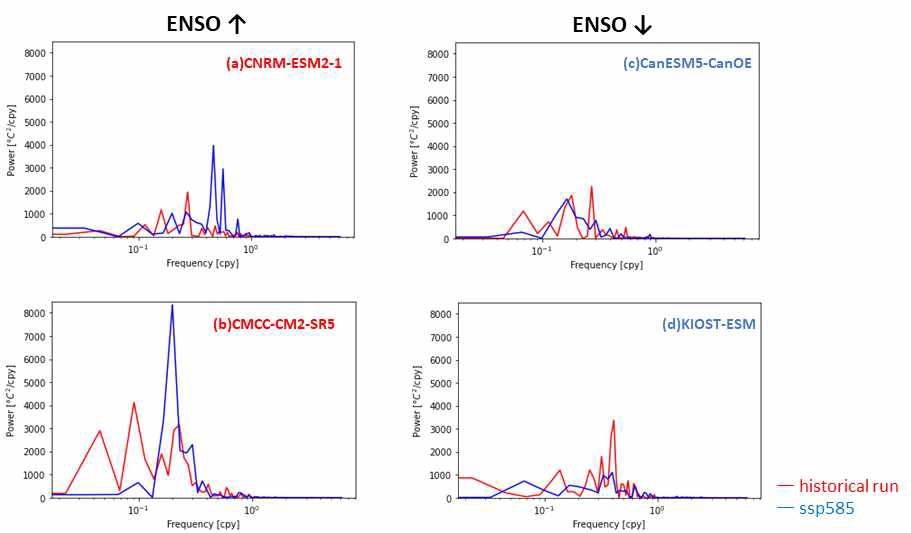
그림 14Nino 3.4 index Power spectrum analysis
Nino 3.4 index Power spectrum analysis
'">
Nino 3.4 index Power spectrum analysis
단주기 signal은 미래 기후에서 ENSO 강도가 증가하는 (a), (b)에서 증가하는 반면, 장기 signal은 미래 기후에서 ENSO 강도가 감소하는 (c), (d)에서 증가함 (그림 14).
이와 같이 ENSO 강도와 주기성은 미래 기후에서의 ENSO 강도 변화에 따라 두 가지 측면으로 명확히 구분되어 ENSO 예측에 영향을 미친다고 볼 수 있음.
빨간색 점은 미래 기후에서 ENSO 강도가 강해지는 model을 뜻하고, 파란색 점은 미래 기후에서 ENSO 강도가 약해지는 model을 뜻함.
Bjerknes feedback을 구성하는 positive feedback 3가지를 ENSO 강도에 따라 분류되는 model group에서 historical run과 SSP5-8.5에서 분석함. Zonal advection feedback 및 Ekman feedback은 CMIP6 model에서 과거와 미래 기후 사이 차이가 거의 없음을 알 수 있음. Thermocline feedback은 model마다 큰 차이를 보이는 것을 확인함.
빨간색 점은 미래 기후에서 ENSO 강도가 증가하는 model을 의미하고, 파란색 점은 미래 기후에서 ENSO 강도가 감소하는 model을 의미함.
Bjerknes feedback을 구성하는 negative damping term 중 가장 크게 영향을 준다고 알려진 thermal damping을 분석함. 과거에서 미래 기후로 갈수록 thermal damping term이 크게 감소하는 것으로 나타남.
이는 Bjerknes feedback의 약화와 관련이 있음.
CMIP6 참여 전구모델 평가
CMIP6 전구 기후모델의 모의 수준 평가 및 지역모델 경계값 산정
물리량에 대한 CMIP6 전구기후모델들의 모의수준 상호비교
RMSD와 TSS 평가측도와 이들의 각 중앙값들을 활용하여 북태평양과 북서태평양 지역에서의 CMIP6 모델들이 모의한 해양(수온, 열용량) 및 대기 변수들(기온, 강수, 10m 바람 등)의 상대적인 모의수준을 비교함
전반적으로 CNRM과 EC-Earth 계열의 모델들이 상대적으로 우수한 성능을 보임.
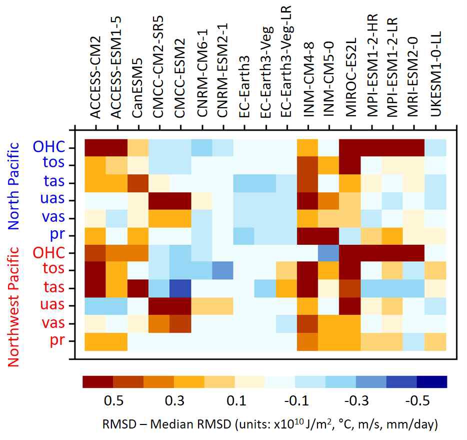
그림 17RMSD를 활용한 17개 CMIP6 전구기후모델의 모의수준 상호비교
RMSD를 활용한 17개의 CMIP6 전구기후모델들의 모의수준 상호비교. 파란색 칼라일수록 좋은 성능을 나타나는 것을 의미함.
'">
RMSD를 활용한 17개의 CMIP6 전구기후모델들의 모의수준 상호비교. 파란색 칼라일수록 좋은 성능을 나타나는 것을 의미함.
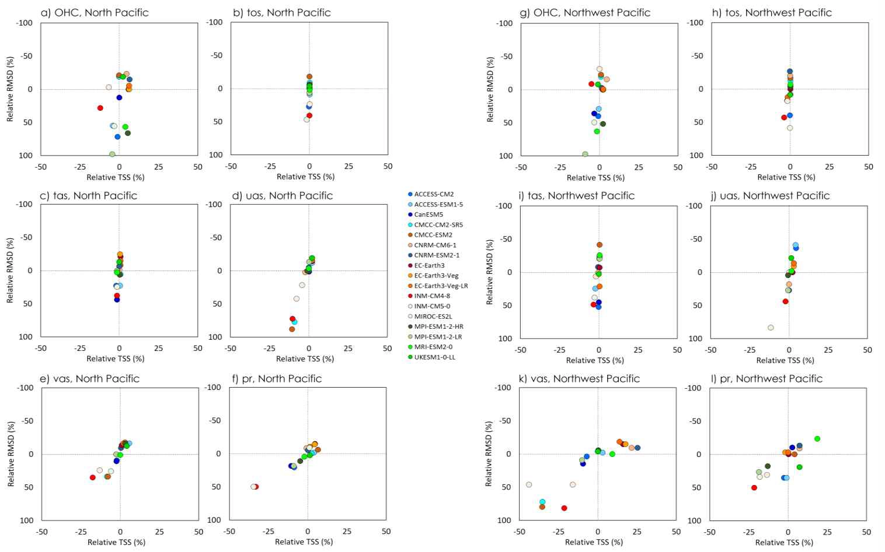
그림 18RMSD와 TSS 평가측도를 조합한 성능 비교
RMSD와 TSS 평가측도를 조합한 성능 비교 - 표식들이 우측상단으로 가까울수록 좋은 성능을 나타내는 것을 의미함.
'">
RMSD와 TSS 평가측도를 조합한 성능 비교 - 표식들이 우측상단으로 가까울수록 좋은 성능을 나타내는 것을 의미함.
변동 경향에 대한 CMIP6 전구기후모델들의 모의 수준 상호 비교
북태평양 및 북서 태평양에서의 해면 2m 기온, 수온, 그리고 해양열용량의 36년간 (1979~2014)의 시계열 분석을 수행함. 전반적으로 CMIP6 앙상블 (짙은 보라색선)은 관측(짙은 검은색 선)에서 나타나는 warming trend를 현실적으로 재현함. 그러나 상대적으로 관측보다 약 1.5~2배 정도 더 강한 warming trend를 모의함 (북태평양에서의 해양열용량 제외).
상대적으로 북태평양보다 북서태평양에서 모델 간의 스프레드가 더 크게 나타나며, 특히 해양 열용량에서 더 큰 차이가 나타남.
전반적으로 MRI-ESM2-0과 MPI-ESM-2-HR 모델이 관측에서 나타나는 warming trend와 더 유사한 warming trend를 모의함
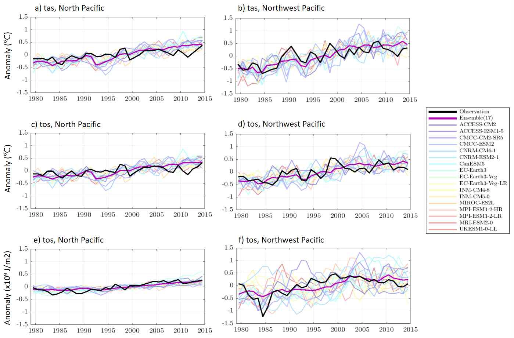
그림 19북태평양·북서태평양 해면 2m 기온·수온·해양열용량 시계열
북태평양과 북서 태평양에서의 해면 2m 기온, 수온, 그리고 해양열용량의 시계열
'">
북태평양과 북서 태평양에서의 해면 2m 기온, 수온, 그리고 해양열용량의 시계열
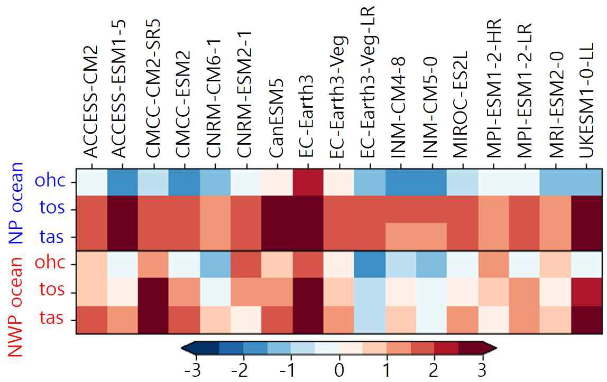
그림 20관측 대비 변동 경향 상대오차
북태평양과 북서 태평양에서의 해면 2m 기온, 수온, 그리고 해양열용량의 관측대비 각 모델들의 변동 경향에 대한 상대오차. 상대오차에서 파란색은 관측보다 warming이 더 적은 것을 의미함.
'">
북태평양과 북서 태평양에서의 해면 2m 기온, 수온, 그리고 해양열용량의 관측대비 각 모델들의 변동 경향에 대한 상대오차. 상대오차에서 파란색은 관측보다 warming이 더 적은 것을 의미함.
CMIP6 참여 전구모델 평가
지역모델 경계값 선정 방법
북태평양 및 북서 태평양 지역에서의 지역모델 경계값을 선정하기 위해 1차적으로 Min-Max 정규화 기법을 이용하여 CMIP6 모델들의 해양 및 대기변수들의 각 RMSD와 TSS 값을 0~1사이의 값으로 정규화를 시킴. 이후 각 변수들에 대해 동일한 가중치를 적용하여 계산된 성능지수(Performance Score: PS)를 바탕으로 북태평양 및 북서태평양에서 각 CMIP6 모델들의 순위를 정량화함. 이때, PS 값은 0~100 사이의 값을 가지며 100에 가까울수록 우수한 성능을 의미함.
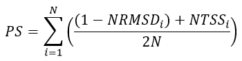
그림 21성능지수(PS) 산정 방법
'">
다양한 기후변화 시나리오의 산출과 앙상블 및 스프레드 분석를 통한 산출 정보의 신뢰성을 확보하기 위해서는 최대한 독립적인 조건에서 생산된 CMIP6 모델들의 모의자료를 지역해양모델의 경계자료로 활용할 필요가 있음.
따라서, 만일 동일 계열의 모델이 연속해서 좋은 순위로 배정이 될 경우 차순위로 좋은 다른 계열의 모델을 최종 경계값으로 선정하는 것을 고려 중에 있음. 현재 고려 중인 모델들은 굵게 표시함
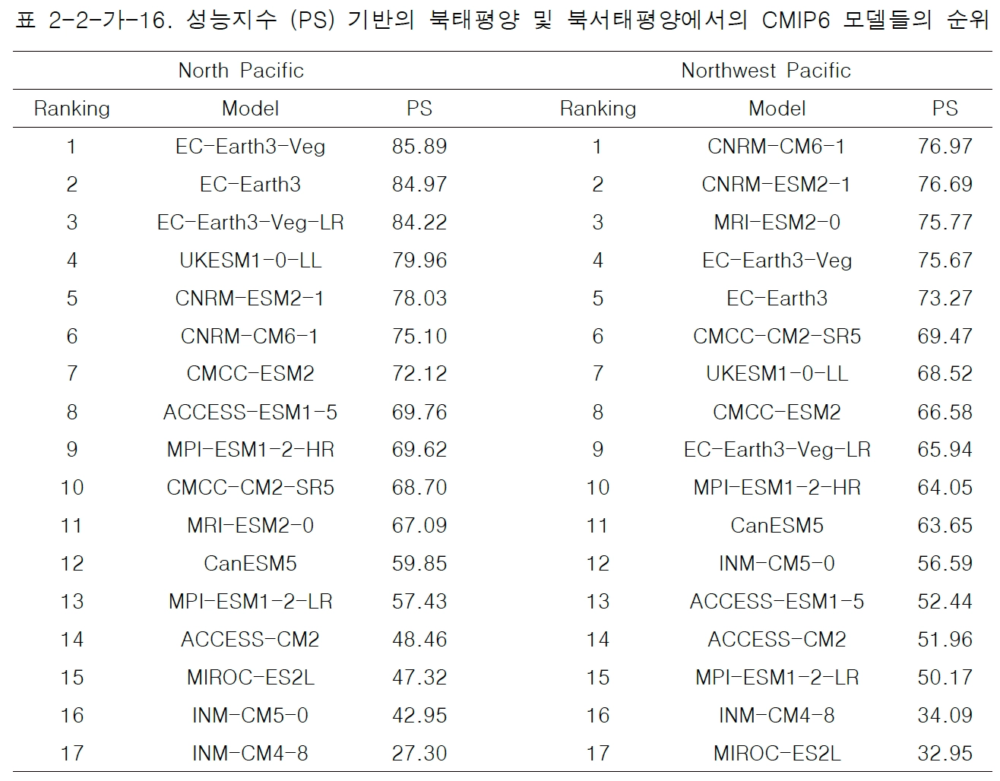
그림 22CMIP6 모델 성능지수(PS) 순위표
'">
지역모델 경계값의 민감도 평가
성능지수(Performance Score: PS)를 계산하는데 이용되는 변수들의 차이에 따른 CMIP6 모델들의 모의수준에 대한 민감도 평가를 수행함
예로, CMCC 계열의 모델들은 온도와 관련된 변수들만을 활용하여 성능지수를 계산할 경우 가장 우수한 모의수준을 보이지만, 바람 또는 강수와 같은 다른 변수들을 추가적으로 고려하게 되면 모의수준이 급격히 낮아짐
전반적으로, EC-Earth3 계열의 모델들이 상대적으로 민감도가 적고 높은 성능지수를 보임.
북태평양의 경우, EC-Earth3-Veg과 UKESM1-0-LL 모델이 PS 계산시 이용되는 변수들에 대한 민감도가 적고 비교적 높은 수준의 PS 점수를 보여 이 지역에 대한 지역해양모델의 경계값으로 활용가능할 것으로 판단됨.
북서태평양의 경우, MRI-ESM2-0와 EC-Earth3-Veg 모델이 상대적으로 민감도가 적고 비교적 우수한 PS 점수를 보이기 때문에 이 지역에 대한 지역해양모델의 경계값으로 활용가능 할 것으로 판단됨.
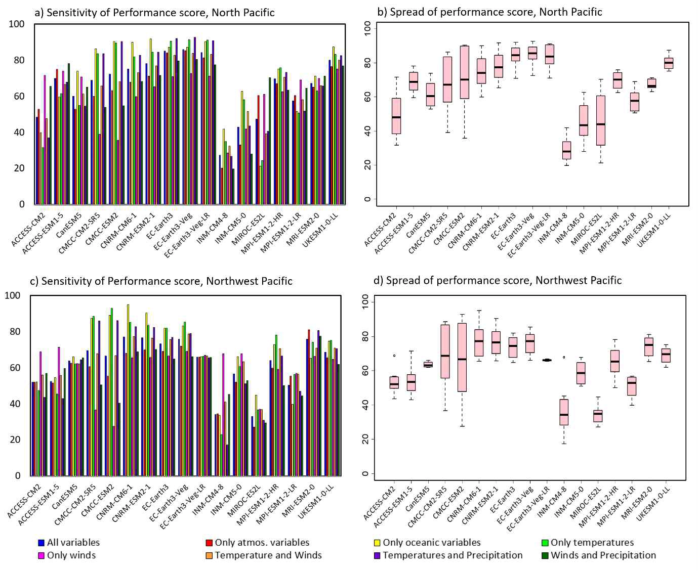
그림 23PS 계산 변수 조합에 따른 민감도 평가
성능지수 계산에 이용되는 변수들에 따른 CMIP6 모델들의 모의수준에 대한 민감도 평가
'">
성능지수 계산에 이용되는 변수들에 따른 CMIP6 모델들의 모의수준에 대한 민감도 평가
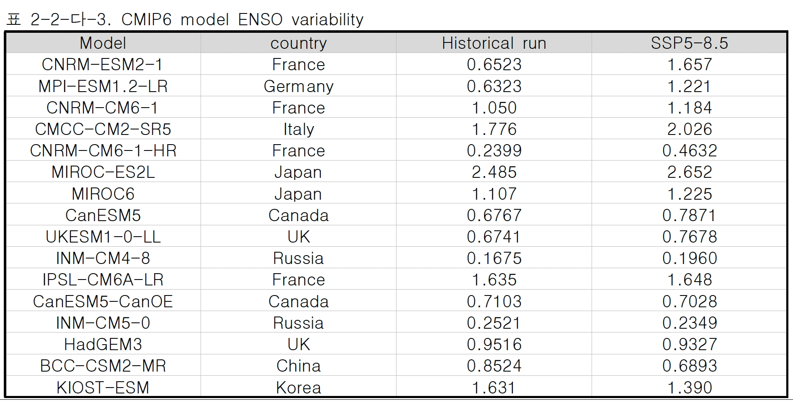
그림 24지역모델 경계값 민감도 평가 결과
2024 보고서
'">
2024 보고서
CMIP6 참여 전구모델 평가
참고
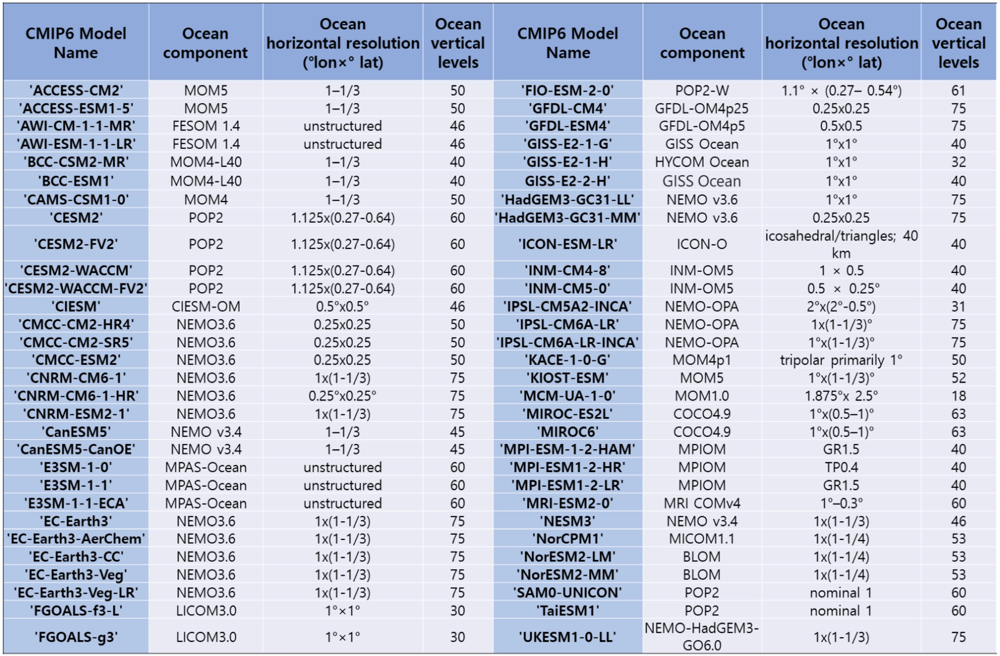
그림 25CMIP6 참여 전구 모델 목록
CMIP6 참여 전구 모델, 2023 연차실적보고서
'">
CMIP6 참여 전구 모델, 2023 연차실적보고서
모형 재분석 자료 기반 통계
한반도 해역 상세 재현 시나리오
GlorysfreeBio
자료 출처
해양기후예측센터 2023년 연차실적보고서 — 해양열함량(OHC) 평가, 해양열함량 추세의 수평 분포, CMIP6 ENSO 특성 분석
해양기후예측센터 2024년 보고서 — CMIP6 전구 기후모델 모의수준 평가 및 지역모델 경계값 산정